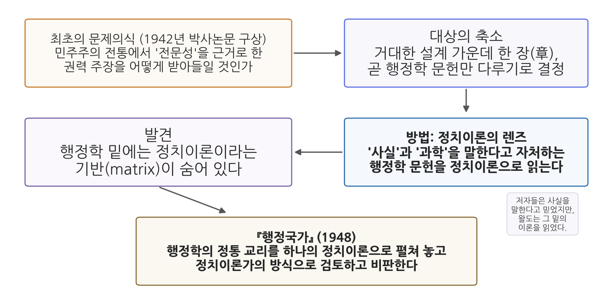
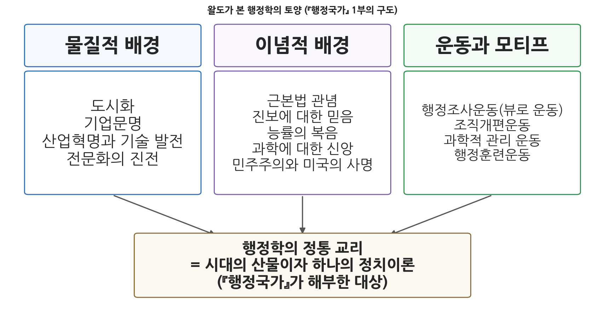

11주차 1차시. 행정국가의 재성찰 (1): 왈도의 행정국가 다시 보기 I: 시대와 사상
최종 수정: 2026-10-06 · 이 교재는 학기 중에도 계속 업데이트됩니다
정치이론의 렌즈로 행정학 문헌을 자세히 들여다보니, 역설적이게도 거기에는 정치이론이라는 기반이 놓여 있음이 분명해 보였다. (드와이트 왈도, 「행정국가 다시 보기」)
이 장에서 배우는 것
1948년, 서른다섯 살의 정치이론 전공자가 책 한 권을 내놓았다. 제목은 『행정국가』. 내용은 도발적이었다. 윌슨에서 귤릭에 이르는 행정학 60년의 성과를 향해, 당신들이 "사실"과 "과학"이라고 불러 온 것은 사실 하나의 정치이론이며, 정치이론이라면 마땅히 정치이론으로서 검토받고 비판받아야 한다고 선언한 것이다. 행정학의 대표 학술지는 서평에서 이 책을 강하게 비판했다. 저자 자신의 회고에 따르면, 어느 정도의 존중과 수용을 얻는 데 10년이 걸렸다. 그러나 오늘날 이 책은 행정학의 자기이해를 바꾼 고전으로 꼽힌다.
10주차를 떠올려 보자. 로버트 머튼은 관료제가 안에서부터 어떻게 역기능을 낳는지를 보여 주었고, 허버트 사이먼은 행정학이 자랑하던 "원리"들이 서로 충돌하는 격언에 불과하다고 비판했다. 이번 주에 다루는 드와이트 왈도(Dwight Waldo)의 비판은 각도가 다르다. 머튼이 조직의 안을, 사이먼이 논리의 안을 파고들었다면, 왈도는 행정학이라는 학문 전체를 바깥에서, 곧 정치철학의 자리에서 검토했다. 이 장에서 읽는 원전은 왈도가 1965년에 쓴 회고 에세이 「행정국가 다시 보기(The Administrative State Revisited)」의 전반부다. 자신의 책이 어떻게 나오게 되었고, 무엇을 문제 삼았으며, 20년 뒤에 보니 무엇이 남았는지를 저자가 직접 말한다.
이 회고는 행정국가가 막 제도로 자리 잡던 1940년대와 도시화와 자동화와 과학 연구가 한꺼번에 팽창하던 1960년대 중반이라는 두 시점을 오가며, 1940년대의 진단 가운데 어떤 것은 역사가 되었고 어떤 것은 오히려 더 무거워졌다고 말한다. 그래서 이 원전을 읽는 일은 행정학이 시대와 함께 자기 전제를 고쳐 가는 과정을 지켜보는 일이기도 하다.
이 장에서 구체적으로 다음을 배운다.
- 왈도가 누구이며, 왜 행정이론을 정치이론으로 읽었는지
- 『행정국가』가 어떤 문제의식(전문성과 민주주의의 긴장)에서 나왔고, 어떻게 수용되었는지
- 왈도가 행정학의 형성 조건으로 지목한 물질적·이념적 배경과 개혁운동
- 능률이 중립적 기준이 아니라 하나의 신앙, 곧 이데올로기였다는 비판의 뜻
- 1965년의 왈도가 자신의 책을 어떻게 다시 평가했는지, 그리고 그 평가가 오늘의 한국 행정에 던지는 질문
이 장은 하나의 질문을 따라간다. "행정학은 자신이 과학이라고 믿었다. 그 믿음의 밑바닥에는 무엇이 있었는가?"
1.1 왈도의 생애와 그가 일했던 1930-40년대 행정국가의 현장을 본다 → 1.2 원전 강독으로 『행정국가』의 기원, 문제의식, 수용을 읽는다 → 1.3 행정학이 형성된 물질적·이념적 배경과 개혁운동에 대한 1965년의 재평가를 읽는다 → 1.4 능률 이데올로기 비판의 출발점을 확인한다 → 1.5 데이터 기반 행정, 공론화, 수도권 집중, 행정학의 수입 같은 한국 사례로 현대 행정에의 함의를 정리한다. 능률 비판의 본론과 민주행정론은 다음 차시(11주차 2차시)에서 이어진다.
1.1 왈도와 행정이론의 정치철학
미국의 행정학자로, 1913년 네브래스카주 디위트의 농촌 마을에서 태어났다. 지역의 웨슬리언대학과 주립사범대학에서 교사 교육을 받은 뒤 네브래스카대학교에서 1937년 정치학 석사를 마쳤고, 장학금을 받아 예일대학교로 가서 정치이론가 프랜시스 코커의 지도로 박사학위를 받았다. 제2차 세계대전 기간에는 연방정부에서 일했고, 전쟁이 끝난 뒤 캘리포니아대학교 버클리에 부임해 1958년부터 1967년까지 정부학연구소(IGS) 소장을 맡았다. 1966년부터 1977년까지 『행정학보(PAR)』 편집장을 지내며 학계의 논쟁을 지면으로 끌어올렸다. 1968년 시러큐스대학교 맥스웰스쿨로 옮겨 앨버트 슈바이처 인문학 석좌교수가 되었고, 그 자리에 딸린 연구비로 같은 해 미노브룩 회의를 열어 젊은 학자들을 불러 모았다. 만년에는 버지니아공과대학교에서도 가르쳤으며 2000년 87세로 사망했다.
대표 저술: 『행정국가』(1948), 『행정학 연구(The Study of Public Administration)』(1955), 『격동기의 행정(Public Administration in a Time of Turbulence)』(1971, 편저), 『행정의 사업(The Enterprise of Public Administration)』(1980)
정치이론 전공자, 행정학에 들어오다
드와이트 왈도(Dwight Waldo, 1913-2000)는 미국의 행정학자다. 그러나 출발은 행정학이 아니었다. 그의 주된 관심과 전공은 정치이론, 곧 플라톤에서 루소로 이어지는 정치사상의 전통이었다. 그는 정치이론가 프랜시스 W. 코커에게 배우기 위해 예일대학교로 갔고, 그 지도 아래 1942년에 박사학위 논문을 제출했다. 논문 제목은 「미국 행정학 문헌의 이론적 측면」. 이 논문을 대폭 압축하고 다듬어 1948년에 출판한 책이 『행정국가: 미국 행정의 정치이론(The Administrative State)』이다.
경력도 남달랐다. 왈도는 논문을 쓴 뒤 제2차 세계대전 기간 4년을 연방정부 안팎에서 일했고, 전쟁이 끝난 뒤 정치이론을 가르치는 조건으로 캘리포니아 대학교에 부임했다. 그런데 실제로는 정치이론을 제외한 온갖 과목을 가르치다가, 책이 나온 1948년 무렵에는 행정학에 정착하게 되었다. 본인의 회고에 따르면, 그는 행정학 과목을 한 번도 수강한 적이 없었고, 바로 그 이유로 연방정부의 행정학 시험에 응시하려다 허가를 받지 못한 적도 있었다. 그는 이 사실을 학과장에게 굳이 알리지 않았다고 덧붙인다. 행정학 바깥에서 온 사람이 행정학의 고전을 썼다는 이 사정은, 곧 읽게 될 원전의 어조와 관점을 이해하는 데 중요하다.
1930-40년대: 행정국가가 제도로 자리 잡던 시대
왈도가 박사논문을 쓰던 1930년대 말과 1940년대 초는 미국 행정학의 정통 교리가 가장 큰 자신감을 갖던 시기였다. 9주차에서 본 것처럼 뉴딜은 연방정부의 사업과 조직을 크게 늘렸고, 커진 정부를 어떻게 관리할 것인가가 국가의 과제가 되었다. 1937년 루이스 브라운로, 찰스 메리엄, 루서 귤릭 세 사람으로 구성된 대통령 직속 행정관리위원회(브라운로 위원회)는 보고서에서 "대통령은 도움이 필요하다"고 선언했고, 이 권고는 1939년 재조직법으로 이어져 대통령실이 만들어지고 예산국이 재무부에서 대통령실로 옮겨졌다. 귤릭의 POSDCoRB가 교과서의 개념에 그치지 않고 연방정부의 실제 조직 설계로 구현된 것이다.
이 장면을 왈도의 관점에서 다시 보면 흥미로운 점이 드러난다. 브라운로 위원회의 세 위원은 모두 행정 전문가였고, 그들의 권고는 "관리의 원리"라는 전문 지식의 이름으로 제시되었다. 그러나 그 권고의 내용은 대통령에게 더 많은 참모와 예산 권한을 주자는 것, 곧 연방정부 안의 권력 배분을 바꾸자는 것이었다. 실제로 의회는 처음 제출된 재조직 법안을 통과시키지 않았고, 루스벨트는 더 약한 형태의 1939년 법에 만족해야 했다. 전문가의 기술적 권고가 의회에서는 권력의 문제로 다루어진 것이다. 왈도가 행정학 문헌의 밑바닥에서 정치이론을 찾으려 한 것은 이런 시대를 배경으로 한다.
전쟁은 왈도에게 행정국가를 안에서 경험할 기회를 주었다. 그는 전시 물가 통제를 맡은 물가관리청을 거쳐 대통령실 예산국에서 행정 분석관으로 일했다. 정치이론 전공자는 이 4년 동안 행정이 책 속의 원리가 아니라 매일의 판단과 타협으로 이루어진다는 것을 직접 보았다. 뒤에서 읽을 원전에서 왈도가 "행정의 어려움에 대한 건전한 존중"을 얻었다고 말하는 것은 이 경험을 가리킨다.
전쟁이 끝난 뒤 정통 교리는 여러 방향에서 동시에 도전을 받았다. 1947년 로버트 달은 『행정학보(Public Administration Review)』에 「행정의 과학: 세 가지 문제」를 실어, 행정학이 과학이 되려면 규범적 가치의 위치, 인간 본성에 대한 이해, 비교 연구라는 세 문제를 먼저 풀어야 한다고 주장했다. 같은 해 사이먼은 『행정행태론』을 내놓았고(10주차), 이듬해 왈도의 『행정국가』가 나왔다. 세 사람의 출발점과 결론은 서로 달랐지만, 행정의 보편 원리를 과학으로 내세운 전전(戰前)의 정통 교리를 의심했다는 점에서는 같은 흐름에 속했다.
그런데 학계가 정통 교리를 의심하던 바로 그때, 실무는 여전히 정통 교리의 언어로 움직이고 있었다. 1947년 7월 트루먼 대통령은 전직 대통령 허버트 후버를 위원장으로 하는 행정부조직위원회(후버 위원회)를 구성했고, 이 위원회의 목적은 "절약, 능률, 서비스 개선"을 위한 조직 개편이었다. 『행정국가』가 출판된 1948년은 이 위원회가 한창 활동하던 해다. 왈도의 책은 이런 시기에 정통 교리의 전제를 정면으로 문제 삼은 셈이다. 왈도가 1965년의 회고에서 "후버 위원회 유형의 노력"을 다시 언급하는 것도 이 때문이다(1.3절).
반세기의 질문
왈도의 영향력은 책 한 권으로 끝나지 않았다. 1952년에는 사이먼과 학술지 지면에서 정면으로 대립했고(다음 차시에서 다룬다), 1968년에는 미노브룩 회의(Minnowbrook Conference)를 열어 젊은 학자들과 함께 "적실성 있는 행정학" 논의를 촉발했다. 이 회의는 12주차에서 배울 신행정학이 시작된 자리가 된다. 요컨대 왈도는 행정학의 한복판에서 반세기 동안, 행정학이 스스로를 어떤 학문으로 이해해야 하는가라는 질문을 던진 사람이다.
1.2 원전 강독: 그 책은 어떻게 나왔는가
에세이는 청탁을 받은 사연에서 시작한다. 왈도는 글을 "기원과 수용", "몇 가지 내용 문제: 개정 메모", "의제"의 세 부분으로 나누겠다고 예고하고, 회고적이고 개인적인 이야기에서 전망적이고 일반적인 이야기로 나아가겠다고 밝힌다. 이 장은 첫 부분과 둘째 부분의 앞쪽을 읽는다. 먼저 읽을 것은 이 책의 관점이 어디서 왔는가에 대한 왈도의 설명이다.
최초의 문제의식: 전문성과 민주주의
왈도는 박사논문의 원래 구상을 공개한다.
"원래 구상한 논문 제목은 '민주주의 전통에서의 전문성 개념'이었다. 나를 사로잡은 것은, 겉으로는 민주적인 나라들과 사상가들 사이에서 '전문성', 곧 남다른 지식과 훈련과 기술을 근거로 더 큰 권력이나 특별한 정치적 역할을 요구하는 다양한 모습을 볼 수 있다는 점이었다. 그렇다면 이런 요구를 민주주의 이론의 평등주의적 분위기와, 때로는 그 교리적 선언과 어떻게 조화시킬 것인가? 어느 정도의 민주주의를, 어떤 상황에서, 어떤 방식으로 '내주어야' 하는가? (…) 행정학 저자들은 더 큰 권력이나 특별한 정치적 기능을 요구하는 듯 보였고, 그것도 민주주의 체제 안에서, 심지어 민주주의의 이름으로 그렇게 하고 있었다."
무슨 말인가. 이 인용은 세 단계로 읽을 수 있다. 첫째 전제는 민주주의 이론이 시민의 평등을 기본 가정으로 삼는다는 것이다. 둘째 전제는 현실의 민주주의 국가에서도 남다른 지식과 훈련을 근거로 더 큰 권력이나 특별한 정치적 역할을 요구하는 주장, 곧 전문성(expertise)의 요구가 반복해서 나타난다는 것이다. 두 전제가 함께 성립하면 조화의 문제가 생긴다. 전문가에게 권한을 내줄수록 평등한 시민이 스스로 다스린다는 민주주의의 약속은 줄어들기 때문이다. 여기서 전문성은 단순히 아는 것이 많다는 뜻이 아니라, 그 앎을 근거로 정치적 권한을 요구하는 주장을 가리킨다. 왈도는 이 큰 문제를 다루려 했으나 구상이 너무 커서 그 가운데 한 장(章)에 해당하는 주제만 남겼고, 그 한 장이 바로 행정학이었다. 행정학이야말로 훈련된 전문 관료에게 행정을 맡기라고, 민주주의의 이름으로 요구해 온 문헌이었기 때문이다.
행정학이 이런 요구를 해 왔다는 것은 이 교재의 앞 장들에서 이미 여러 번 확인했다. 4주차의 공무원제도 개혁가들은 정당에 대한 충성이 아니라 시험으로 확인된 능력에 따라 공직을 배분하자고 주장했다. 6주차의 시정연구소는 시민의 분노나 정치인의 연설이 아니라 전문가의 조사와 수치로 시 정부를 바꾸자고 했다. 앞에서 본 브라운로 위원회의 "대통령은 도움이 필요하다"는 선언도 전문 참모의 역할을 키우자는 요구였다. 이 주장들은 모두 부패와 무능을 막아 민주주의를 더 잘 작동하게 하자는 명분을 내걸었다. 왈도의 질문은 바로 그 명분을 향해 있다. 민주주의를 위해 전문가에게 권력을 준다면, 그 결과로 민주주의는 얼마나 줄어드는가.
또한 원전은 논문의 범위가 줄어든 뒤에도 중심 생각이 남았다고 말한다. 거대한 설계에서 잘라 내고 나니 프로젝트는 다른 차원을 띠게 되었지만, 자신이 다루는 것이 이론, 특히 민주주의 이론이라는 생각은 끝까지 중심에 있었다는 것이다. 이 점에서 두 가지 오독을 피해야 한다. 하나는 『행정국가』를 행정학 비판서로만 읽는 것이다. 이 책은 처음부터 민주주의 이론의 한 장으로 기획되었다. 다른 하나는 왈도가 전문성 자체를 반민주적이라고 고발하려 했다고 읽는 것이다. 인용문의 질문은 전문성을 거부하라는 것이 아니라 얼마를, 어떤 조건에서 내줄 것인지를 따져 보라는 것이며, 이 태도는 뒤의 "존중" 대목으로 이어진다.
왜 중요한가. 이 대목은 『행정국가』가 행정학 내부의 교과서 논쟁이 아니라 정치철학의 오래된 질문, 곧 "누가 다스려야 하는가"에서 출발했음을 보여 준다. 2주차에서 읽은 공자의 덕치론도, 4-5주차에서 읽은 윌슨의 실적주의 옹호도 결국 이 질문에 대한 답이었다. 왈도는 행정학을 그 유서 깊은 대화의 한 참여자로 자리매김한 것이다.

그림 11-1은 이 절과 다음 절의 흐름을 하나의 구도로 보여 준다. 왼쪽 위에서 출발하는 문제의식(전문성 대 민주주의)이 대상의 축소(행정학 문헌)를 거쳐, 정치이론의 렌즈라는 방법으로 이어지고, 그 렌즈가 행정학 밑에 깔린 정치이론이라는 기반을 발견하면서 『행정국가』라는 책으로 완성된다. 이 그림에서 알 수 있는 것은, 왈도의 비판이 즉흥적 시비가 아니라 일관된 설계의 산물이라는 점이다.
폭로에서 존중으로
행정학을 분석 대상으로 삼은 데에는 솔직한 고백이 따라붙는다. 왈도는 당시 자신이 행정학 문헌에 반감, 심지어 경멸을 품고 있었다고 털어놓는다. 그는 그 이유를 세 가지로 든다. 첫째, 이론이 실천보다, 인문학이 응용학보다 우월하다는 인문학도의 익숙한 태도가 있었다. 둘째, 정치학 안에서도 정치이론과 행정학이 "이론과 응용"이라는 스펙트럼의 양 끝에 놓인 서로 다른 분야라는 암묵적 믿음이 있었다. 셋째, 그의 옛 스승이자 친구였던 레인 W. 랭커스터는 행정학 문헌을 지루하고 허세로 가득 찬 것으로 여겼다.
동시에 그는 "실무가"들이 이론가를 깔보는 시선에 방어적인 불안도 느꼈다. 공공 업무와의 몇 차례 작은 접촉이 썩 성공적이지 못했던 경험도 이 불안을 키웠다. 이론가가 흔히 택하는 방어는 "이론만큼 실용적인 것도 없다"는 자세, 곧 세계는 사람들이 품고 있는 이론에 따라 움직이거나 움직이지 않는다는 주장이다. 왈도는 그 주장이 상당 부분 사실이라고 보면서도, 자신은 그저 옳은 데 만족하지 않았고 이론가도 "관련성"과 "유용성"을 갖고 있음을 증명하고 싶었다고 말한다. 이런 마음으로 행정학 문헌을 파고들었을 때, 그가 발견한 것은 뜻밖의 역설이었다.
"정치이론의 렌즈로 행정학 문헌을 자세히 들여다보니, 역설적이게도 거기에는 정치이론이라는 기반(matrix)이 놓여 있음이 분명해 보였다. 역설이라 한 까닭은, 그 문헌을 쓴 이들이 흔히, 그리고 전형적으로, 자신은 한가한 공상에서 벗어나 사실의 세계로, 곧 현대 정부가 실제로 어떻게 일하고 또 일해야 하는가라는 딱딱하고 중대한 문제로 곧장 다가서고 있다고 전제하거나 주장했기 때문이다. 그러므로 내 논문은 폭로(exposé)가 될 터였다. 덜 극적으로 말하면, 나는 쌓인 짐을 파헤쳐 그 기반을 드러내고, 그 이론을 만천하에 펼쳐 놓은 다음, 정치이론가가 모든 정치이론을 다루듯 검토하고 비판하려 했다."
무슨 말인가. 논증은 세 걸음으로 이루어진다. 먼저 행정학자들은 자신이 이론이 아니라 사실을 다룬다고 전제하거나 주장했다. 다음으로 왈도는 그 주장과 달리 문헌의 밑바닥에 정치이론이라는 기반(matrix, 여러 요소가 그 안에서 형성되는 바탕)이 놓여 있음을 발견했다. 마지막으로 그 이론을 드러내 놓고, 정치이론가가 모든 정치이론을 다루듯 검토하고 비판하겠다고 했다. 예산을 어떻게 짜고 조직을 어떻게 묶을지는 공상이 아니라 실무의 문제라는 믿음 밑에는, 좋은 정부란 무엇인가, 누가 다스려야 하는가, 무엇이 좋은 삶인가에 대한 답이 이미 깔려 있었다. 스스로 이론이 아니라고 믿는 이론은 검증을 면제받기 쉽다. 폭로(exposé)는 이 면제를 걷어 내는 작업이다. 흔한 오독은 폭로를 행정학자들의 부정직이나 무지를 고발하는 일로 읽는 것이다. 왈도가 "역설"이라고 부른 것은 그들이 이론을 숨겼다는 점이 아니라 이론을 하고 있다는 사실을 의식하지 못했다는 점이다.
구체적인 예를 들어 보자. 9주차에서 본 귤릭의 원칙들, 곧 한 사람의 지휘자 아래에 둘 수 있는 부하의 수에는 한계가 있다는 통솔범위의 원칙이나 행정부의 권한을 최고 책임자에게 모아야 한다는 주장은 조직 설계의 기술로 제시되었다. 그러나 행정 권한을 대통령 한 사람에게 모을 것인가, 의회와 독립 위원회에 나누어 둘 것인가는 미국 헌법이 권력분립으로 답하려 했던 정치이론의 문제다. 기술의 언어로 쓰였다고 해서 정치이론의 질문이 사라지는 것은 아니다. 왈도가 "폭로"라고 부른 작업은 이런 기술적 처방 밑에 깔린 정치적 선택을 하나하나 드러내는 일이었다.
그런데 폭로를 준비하던 왈도의 태도가 작업 도중에 바뀐다. 이 대목이 『행정국가』의 성격을 결정했다.
"자료를 훑고 그 이론을(이데올로기라 불러도 좋다) 모으고 체계화하는 과정에서, 나는 그 성취를, 하나의 정치이론으로서의 그 산물을 근본적으로 존중하게 되었다. 이 점은 책에 반영되어 있다. 나는 그것이 중요한 정치이론이라고 진심으로 말했다. 그것은 정치사상사에서 가장 중요한 이론들 가운데 하나이며, 정치이론가만이 아니라 현대 국가와 공공사무에 관심 있는 누구라도 진지하게 다룰 가치가 있다. (…) 논문을 쓴 뒤 나는 4년을 공공행정의 안팎에서 일했다. (…) 어떤 점에서 나의 편견은 확인되었다. 그러나 또 어떤 점에서 나는 전향자가 되었다. (…) 나는 행정이 얼마나 어려운 일인지에 대한 건전한 존중과, 행정가들과 공감하는 잘 발달된 능력을 갖게 되었다."
무슨 말인가. 이 인용에는 서로 다른 두 경로의 존중이 겹쳐 있다. 하나는 읽기의 경로로, 자료를 모으고 체계화하는 과정에서 행정학이 정치사상사에 남을 만한 중요한 정치이론임을 인정하게 되었다는 것이다. 다른 하나는 경험의 경로로, 전시 4년의 실무가 행정의 어려움에 대한 건전한 존중과 행정가들과 공감하는 능력을 가져다주었다는 것이다. 원전에서 생략한 부분에서 왈도는 이 경험의 효과가 "복합적이고 다소 모순적"이었다고 말한다. 편견이 확인된 쪽에 대해서는 관료로서의 자신이 스스로의 기준으로 보아 실패자였기 때문일 것이라고 자조한다. 전향한 쪽의 예로는 공공행정을 위한 교육으로 법학 교육이 적합하지 않다는 행정학자들의 주장이 오히려 과소평가되었다고 확신하게 된 것을 든다. 존중을 얻었다고 해서 비판이 철회된 것은 아니다. 흔한 오독은 이 대목을 왈도가 폭로의 입장을 접고 행정학에 항복했다는 뜻으로 읽는 것이다. 정치이론으로서 중요하다는 평가는 오히려 그 이론이 정치이론으로서의 엄격한 검토를 받을 자격이 있다는 뜻이다.
왜 중요한가. 『행정국가』의 비판은 바깥에서 던지는 냉소가 아니라, 대상을 깊이 읽고 일부는 직접 겪은 사람의 내재적 비판이 되었다. 비판과 존중이 함께 간다는 이 태도는, 왈도가 평생 행정학을 떠나지 않고 그 안에서 논쟁한 이유이기도 하다. 그리고 이 태도는 다음 차시에서 볼 사이먼 평가에서도 그대로 드러난다. 왈도는 논쟁 상대의 프로그램을 "밀도 있고 정연하다"고 인정한 뒤에 비판한다.
정치이론가라는 이름은 나중에 붙는다
왈도가 행정학을 "중요한 정치이론"이라고 부르면 윌슨이나 테일러나 귤릭은 스스로를 정치이론가라고 생각한 적이 없다는 반문이 나올 수 있다. 왈도는 정치이론가라는 칭호가 대개 사후(post hoc)에 붙는 것이며, 처음부터 정치이론가가 되겠다고 나선 사람은 드물다고 답한다. 어떤 글이 정치이론인지는 저자의 의도가 아니라 글의 내용이 결정한다는 뜻이다. 이 교재가 다룬 인물들도 그렇다. 키케로는 아들에게 의무를 가르치려 했고, 윌슨은 공무원제도 개혁을 설득하려 했으며, 테일러는 공장의 낭비를 줄이려 했지만, 이들의 글에는 누가 다스려야 하며 무엇이 좋은 질서인가에 대한 답이 담겨 있다. 실무서나 개혁 팸플릿처럼 보이는 글도 그 밑에 깔린 전제를 찾아 읽으면 정치이론으로 읽을 수 있다는 것이 왈도의 방법이자 이 교재가 고전을 읽는 방식이다.
스스로 열거한 누락: 버나드, 베버, 호손
왈도는 1965년의 눈으로 볼 때 부끄러운 누락을 스스로 열거한다. 체스터 버나드의 『경영자의 기능』(1939)을 읽고도 책에서 언급하지 않았고, 이미 행정학 문헌에 영향을 미치고 있던 막스 베버(7주차)의 관료제 논의도 다루지 않았으며, 호손 실험을 "그릇되고 하찮다"고 일축한 각주는 "내가 어찌 그리 틀릴 수 있었단 말인가"라고 자책할 만큼 당혹스러운 것이 되었다. 그는 인문학 교육을 받은 사람은 인간 행동의 특성에 이미 익숙해 있어 호손 실험의 결론이 새롭지 않게 보였다고 설명하면서도, 익숙한 것과 경험 연구로 확인한 지식은 어조와 정밀성과 효과가 다르다고 선을 긋는다. 고전을 쓴 학자도 자기 시대에 준비된 만큼만 읽어 낸다. 그러므로 오늘 우리가 고전을 읽을 때에도, 저자가 무엇을 보았는가와 함께 무엇을 보지 못했는가를 물어야 한다.
수용: 엇갈린 서평과 세 부류의 나라들
왈도는 책이 어떻게 받아들여졌는지도 직접 정리한다. 그는 "영향"이라는 말 대신 "수용과 활용"이라는 말을 고른다. 책의 영향을 재는 일은 매우 부정확한 기술이기 때문이다.
"(…) 미국 바깥에서 이 책이 호의적으로 받아들여지고 쓰이는 양상은 오랫동안 내게 수수께끼였지만, 마침내 일정한 패턴을 찾아냈다. 오래된 '성공한' 나라들(영국, 프랑스, 독일 등)은 배울 것이 별로 없다는 믿음이 굳어 있어 대체로 이 책을 외면했다. 어떤 형태로든 행정 장치를 갖추는 일 자체가 성취인, 새로 출발해 고투하는 나라들도 마찬가지로 외면했다. 그러나 그 사이의 넓은 띠에 속하는 나라들, 곧 행정제도를 고치고 개선하는 일이 정책 의제의 맨 위에 놓인 나라들에서는 그 수용이 지금까지도 매우 만족스럽다."
무슨 말인가. 이 인용은 세 부류의 나라를 가르는 기준이 국력이나 지리가 아니라 행정제도를 대하는 태도에 있음을 보여 준다. 행정제도가 이미 안정된 나라는 고칠 필요를 느끼지 않으니 행정학의 전제를 따지는 책에 관심이 적다. 행정 기구를 처음 만드는 나라는 기본 장치를 갖추는 일이 급하니 그 전제를 따질 여유가 없다. 행정제도가 있기는 하지만 그것을 어떻게 고칠지가 국가의 주요 의제인 나라에서는 사정이 다르다. 어떤 방향으로 고칠지를 정하려면 고치려는 제도가 어떤 가치를 전제하는지를 따져야 하고, 『행정국가』는 바로 그 작업을 보여 주는 책이기 때문이다. 이 관찰을 읽을 때 "사이의 띠"를 경제 발전 수준이 중간쯤인 나라로 읽는 것은 흔한 오독이다. 원전의 기준은 제도 개선이 정책 의제의 맨 위에 있는가이며, 이것은 책의 우수성에 대한 자평이 아니라 수용의 패턴에 대한 관찰이다.
왜 중요한가. 이 관찰은 행정학 지식이 국경을 넘어 이동하는 방식에 대한 초기의 통찰이다. 1950-60년대에 미국은 여러 나라에 행정 기술과 행정학 교육을 전하는 기술원조 사업을 벌였고, 왈도는 이 에세이에서 그 흐름을 여러 차례 언급한다. 행정학을 받아들이는 나라의 사정에 따라 같은 책이 전혀 다르게 읽힌다는 그의 관찰은, 행정 지식이 어느 나라에서나 같은 효과를 내는 중립적 기술이 아니라는 다음 차시의 논의(도구의 중립성)를 미리 보여 준다. 한국에 행정학이 들어온 과정도 이 시기의 기술원조와 맞물려 있는데, 이는 1.5절에서 살펴본다.
수용에 관한 이야기는 한 영국 평자의 논평으로 마무리된다. 호의적인 평자였던 W. J. M. 매켄지는 "왈도 교수는 미국에서 출판된 행정학 연구를 거의 모두 읽었다. 덕분에 앞으로 50년 동안은 그 일을 다시 할 필요가 없을 것이다"라고 썼다. 왈도는 이를 칭찬으로 받아들이면서도 그 속에 담긴 가벼운 풍자를 알아보았고, 개정판이나 속편을 검토하는 일은 2000년으로 미뤄 두자고 스스로에게 메모했다고 말한다. 그래서 1965년의 에세이는 개정판이 아니라 "지금 개정판을 만든다면 붙일 개정 구상"의 형식을 띤다. 다음 절에서 읽는 배경과 운동에 관한 메모들이 바로 그 구상이다.
1.3 물질적·이념적 배경과 개혁운동
행정학은 어떤 조건에서 형성되었는가
『행정국가』 1부의 구도는 이렇다. 행정학의 정통 교리는 시대와 무관한 과학이 아니라 특정한 시대의 산물이다. 그렇다면 그 시대를 이루는 조건들을 살펴야 한다. 왈도는 이를 두 범주로 나눴다. 하나는 물질적 배경이다. 도시화, 기업문명, 산업혁명과 기술 발전, 전문화의 진전처럼 구체적인 사회경제적 변화들이다. 다른 하나는 이념적 배경이다. 근본법 관념, 진보에 대한 믿음, 능률의 복음, 과학에 대한 신앙, 민주주의와 미국의 사명 같은, 그 시대 미국인들이 당연하게 여기던 믿음들이다. 6주차에서 본 도시행정의 위기와 시정연구소 운동, 그리고 테일러의 과학적 관리를 떠올리면 이 배경들이 낯설지 않을 것이다.
물질적 배경 가운데 도시화의 규모는 수치로 확인할 수 있다. 미국 인구조사에서 도시 인구(인구 2,500명 이상 지역 거주자)의 비율은 1920년에 51.2%로 처음 절반을 넘었다. 행정학이 대학의 강좌와 교과서를 갖춘 학문으로 자리 잡던 시기가 바로 미국이 농촌 사회에서 도시 사회로 넘어가던 시기다. 도시가 커지면 상수도, 위생, 치안, 교통, 학교 같은 공공 서비스를 누가 어떻게 공급할지가 문제가 되고, 그 문제를 다룰 전문 지식에 대한 수요가 생긴다.
1965년의 왈도는 이 목록을 하나씩 짚으며 업데이트 메모를 단다. 그는 두 범주 아래 고른 주제들이 지금 보아도 적절했다고 평가하면서, 오늘 비슷한 글을 쓴다면 어떤 항목은 본질적으로 역사가 되었다고, 어떤 항목은 영향의 방식이 달라졌다고, 어떤 항목은 새로 넣어야 한다고 적는 일이 주가 될 것이라고 말한다.
"도시화는 너무 빠르게 진행되어 왔다. '도시혁명' 혹은 '광역혁명'을 말해도 될 정도다. (…) 나는 행정학이 미국의 도시화에 대한 응답이었다고 보았고, 지금도 그렇게 본다. 문제는 우리의 학문적 응답이 충분히 중요했는가, 그리고 가속되는 도시화의 속도를 따라갔는가 하는 것이다. (…) 자동화의 급속한 진전은 산업혁명 제2단계의 목록에 반드시 추가해야 한다. '전문화의 진전'도 전혀 낡은 주제가 아니다. 지식과 권위의 불일치, 혹은 그 충돌 때문에 조직의 이론과 실천에 '위기'가 있다는 최근의 저작들을 보면 더욱 그렇다."
무슨 말인가. 이 인용은 세 항목에 대한 메모로 읽는다. 도시화는 "혁명"이라 부를 만큼 빨라졌고, 자동화는 산업혁명 제2단계의 목록에 새로 넣어야 하며, 전문화는 낡은 주제가 아니라 지식과 권위의 불일치라는 형태로 더 첨예해졌다. 첫 항목에서 왈도의 질문은 둘로 나뉜다. 응답이 충분히 중요했는가는 학문의 기여를 묻고, 속도를 따라갔는가는 학문의 적시성을 묻는다. 원전에서 생략한 괄호 안에서 왈도는 첫째 질문에는 아마 그렇다고 할 수 있겠지만 둘째 질문에는 그렇지 못했을 것이라고 스스로 답한다. 흔한 오독은 이 메모를 행정학이 실패했다는 선언으로 읽는 것이다. 왈도는 응답의 중요성을 인정하며, 문제 삼는 것은 속도다. 6주차에서 본 도시행정의 위기가 1965년에는 광역 규모로 커졌다는 진단이기도 하다. 눈여겨볼 대목은 "지식과 권위의 불일치"다. 조직의 위계에서 높은 자리에 있는 사람이 반드시 가장 많이 아는 사람은 아니며, 전문화가 진전될수록 실무 지식은 아래쪽의 전문가에게 쌓이고 결정 권한은 위쪽의 관리자에게 남는다. 이 불일치는 1.2절에서 본 전문성과 민주주의의 긴장이 조직 내부에서 다시 나타난 형태다.
왜 중요한가. 왈도에게 행정학은 시대의 산물이므로, 시대가 바뀌면 행정학도 다시 물어야 한다. 학문의 적실성(relevance)을 끊임없이 점검하는 이 태도가 훗날 미노브룩 회의로 이어진다. 도시화와 자동화와 전문화는 다음 차시에서 읽을 에세이 후반부의 "의제" 목록에서 다시 등장한다. 1940년대의 배경이 1960년대의 의제가 된 것이다.

그림 11-2는 『행정국가』 1부의 분석 구도를 한 장으로 보여 준다. 왼쪽부터 물질적 배경, 이념적 배경, 그리고 그 배경 위에서 실제로 전개된 개혁운동들이 나란히 서고, 세 흐름이 아래의 한 상자, 곧 행정학의 정통 교리로 모인다. 이 그림에서 알 수 있는 것은 왈도 논증의 핵심 형식이다. 정통 교리는 시대의 세 흐름이 합류한 결과물이므로, 시대를 초월한 과학이 아니라 시대에 매인 정치이론이라는 것이다.
1960년대의 업데이트: 위대한 사회와 미국의 사명
왈도의 업데이트 메모 가운데 두 항목은 1965년이라는 시점을 특히 잘 보여 준다. 첫째는 "위대한 사회(Great Society)"다. 린든 존슨 대통령이 빈곤과 인종 차별의 종식을 요구하는 국가 목표로 내건 이 구호는, 왈도가 이 에세이를 쓰던 때 한 행정부의 규범적 슬로건이 된 직후였다. 왈도는 이 변화가 배경 서술의 업데이트를 요구한다고 보고, 하나는 미국이 그 경로를 따라 얼마나 빠르게 움직였는가이고, 다른 하나는 그 "진전"이 매우 불균등해서 긴장과 혼란을 낳았다는 점이라고 제안한다. 행정의 과제가 커지는 속도와 사회의 각 부분이 그 변화를 따라가는 속도가 서로 달랐다는 것이다. 이 불균등이 낳은 긴장은 1960년대 후반의 격동으로 이어지며, 12주차에서 볼 신행정학의 배경이 된다.
둘째는 "민주주의와 미국의 사명"이다. 왈도는 이 주제가 고풍스러운 느낌을 풍긴다는 것을 인정하면서도, 지난 20년 동안 미국 정부가 세계 곳곳에 광범위하게 "관여"해 온 현실을 생각하면 여전히 관련성이 크다고 말하고, 기술원조와 비교행정에서도 마찬가지라고 덧붙인다. 미국식 민주주의와 미국식 행정이 다른 나라에도 좋다는 믿음, 곧 "미국의 사명"이라는 관념이 기술원조라는 행정 사업의 형태로 구체화되었다는 것이다.
운동, 사람, 모티프
이러한 배경 위에서 실제로 변화를 만들어 낸 것은 개혁운동들이었다. 4주차에서 본 엽관제 개혁과 6주차에서 본 시정연구소 운동의 후일담이 여기서 이어진다. 왈도는 1965년의 시점에서 각 운동이 어떻게 되었는지를 평가한다.
첫째, 행정학 운동은 처음에 행정법에 주목하며 출발했으나 1920년대에 균열과 반발을 겪으면서 반(反)법률주의의 편향을 갖게 되었다. 1965년의 왈도가 보기에 이제는 적대감보다 무관심과 무지가 더 크다. 미국 행정학 교육은 공법을 거의 가르치지 않게 되었는데, 세계의 많은 곳에서는 행정 연구와 교육에 법적 접근이 오히려 표준이다. 둘째, 행정학의 심리학 무지에 대한 자신의 옛 지적은 옳았으나, 1940년대 후반부터 호손 실험에서 비롯된 "인간관계"론이 유행이 되고 사이먼과 제임스 마치를 통해 심리학이 들어오면서 사정이 크게 달라졌다. 셋째, 시정연구소에서 출발한 행정조사운동(뷰로 운동)의 독립적·지방자치적 부분은 거의 소멸했고, 동력은 대학 부설 연구소로 넘어갔다. 넷째, 조직개편운동은 후버위원회 유형의 노력으로 이어졌지만, 왈도는 지난 20년의 새로운 연구 성과가 1960년대의 개편 시도에 의미 있게 반영되고 있는지를 "흥미로운 질문"이라고 꼬집는다. 다섯째, 과학적 관리 운동(6주차의 테일러)은 "지적 역사와 영향의 서사로서는 이미 마무리된 장"이 되었다. 국내 운동은 1930년대에 동력을 잃었고 국제 운동은 전쟁으로 큰 타격을 입었다는 것이다.
다섯 항목을 하나씩 조금 더 들여다보자. 첫째 항목의 반법률주의는 미국 행정학의 특이한 성격을 보여 준다. 유럽 대륙의 행정 연구는 오랫동안 행정법학과 함께 발전했고, 공무원 교육도 법학 교육을 중심으로 이루어졌다. 미국 행정학은 이와 달리 관리와 조직의 기술을 중심으로 발전했고, 법은 행정가의 재량을 묶는 장애물로 여겨지는 경향이 있었다. 왈도는 이것이 미국에서는 자연스럽고 바람직하게 여겨지지만 세계의 많은 곳에서는 이해조차 되지 않는다고 지적하고, 대규모 기술원조 사업에 관여하며 비교행정을 공부하는 미국 행정학자들에게 이 차이는 중요한 문제라고 말한다.
이 평가에서 눈여겨볼 것은 개별 항목보다 평가 기준이다. 왈도는 각 운동이 얼마나 능률적이었는지가 아니라, 행정학이라는 학문에 어떤 관념과 편향을 남겼는지를 묻는다. 운동은 지나가도 그것이 만들어 낸 사고의 틀은 남는다. 반법률주의, 심리학에 대한 무관심, 조직 개편에 대한 정통적 처방은 모두 특정 운동이 남긴 사고의 틀이다. 그 틀의 총체가 바로 다음 절의 주제인 정통 교리다.
1.4 능률 이데올로기 비판의 출발
능률의 복음: 1910년대의 장면
이념적 배경 가운데 왈도가 가장 공들여 다룬 것은 능률이다. 그가 "능률의 복음"이라는 말로 가리키는 시대의 분위기는 1910년 동부 운임 사건에서 볼 수 있다. 철도회사들이 화물 운임 인상을 요청하자, 화주들을 대리한 변호사 루이스 브랜다이스는 테일러의 방식을 도입하면 운임을 올리지 않고도 비용을 줄일 수 있다고 반박했고, 증인으로 나선 능률 기사 해링턴 에머슨의 증언은 "과학적 관리"를 전국적 관심사로 만들었다. 운임을 올릴 것인가 말 것인가는 철도회사와 화주 사이의 이해가 걸린 정치경제적 갈등이었다. 그런데 이 갈등이 능률의 문제로 바뀌었다. 낭비를 없애면 누구도 손해 보지 않는다는 것이다. 능률이 갈등을 해소하는 중립적 해법으로 받아들여질 때, 능률은 단순한 측정 기준을 넘어 믿음의 대상이 된다. 왈도가 "복음"이라는 종교적 표현을 쓴 것은 이 때문이다.
같은 해 연방정부에서도 능률은 개혁의 공식 언어가 되었다. 태프트 대통령은 1910년부터 1913년까지 경제와 능률위원회(Commission on Economy and Efficiency)를 운영해 연방정부의 조직과 예산 개혁을 검토하게 했고, 이 위원회를 이끈 사람은 뉴욕시정연구소의 소장이던 프레더릭 클리블랜드였다. 시정연구소에서 시작된 능률 운동이 연방정부의 개혁 기구로 이어진 것이다. 이 위원회의 이름에 들어간 "경제와 능률"이라는 짝은, 『행정국가』에서 한 장의 제목이 되었고 1940년대 후버 위원회가 내건 목적에도 다시 나타난다. 30여 년에 걸쳐 같은 말이 개혁의 목적으로 반복된 것이다.
지하로 내려간 믿음들
이념적 배경의 목록 가운데 왈도가 1965년에 가장 공들여 다시 논평하는 항목이 근본법, 진보, 능률, 그리고 과학에 대한 신앙이다. 이 대목은 이 장에서 가장 유명한 구절에 속한다.
"내가 보기에 근본법이라는 관념은 사라진 것이 아니라 '지하로 내려갔다.' (…) '진보'도 마찬가지다. 그것 역시 지하로 내려갔다. 어떤 수준의 사유에서 우리는 더 이상 진보를 '믿지' 않는다. 그러나 우리가 진보를 믿지 않는다면, 우리의 수많은 전문 활동에 무슨 의미와 정당성이 있겠는가? '능률(efficiency)' 또한 그러하다. 해링턴 에머슨의 '능률의 복음'은 3세기 신학만큼이나 고풍스럽게 들리고, '능률'이라는 단어가 나오면 어딘가 민망해하는 기색이 엿보인다. 그러나 어떤 형태의 개념으로든 능률 없이, 우리가 하는 많은 일을 어떻게 이해할 수 있겠는가? '과학에 대한 신앙'은 전혀 다른 문제다. 일부의 우상 파괴와 공포와 반항에도 불구하고 그것은 자란다. 신앙으로서, 곧 신화로서 그것은 통합하고 에너지를 불어넣는 기능을 한다. (…) 근본법과 진보와 능률에 관해 '지하로 내려간' 많은 것이 여기서 다시 떠올라 하나로 묶인다고, 증명할 길은 없지만 나는 추측한다."
무슨 말인가. "지하로 내려갔다"는 비유가 핵심이다. 근본법(fundamental law)은 의회가 만드는 일반 법률보다 높은 자리에서 정부의 권한을 근거 짓고 제한하는 헌법 수준의 법 관념을 가리킨다. 1948년의 왈도가 행정학의 이념적 기둥으로 지목했던 믿음들, 곧 세상은 진보하며, 능률은 선이고, 그 모두를 근본법이 떠받친다는 믿음은 1965년에 이르러 겉으로는 촌스러운 것이 되었다. 아무도 "능률의 복음"을 설교하지 않고, 능률이라는 말을 꺼내는 것조차 민망해한다. 그러나 왈도가 보기에 그 믿음들은 죽은 것이 아니라 지하로 내려가 계속 일하고 있다. 진보를 믿지 않는다면 전문가들의 활동은 정당성을 잃고, 능률 개념 없이는 행정의 일상 업무를 설명할 수조차 없기 때문이다. 그리고 지하로 내려간 이 믿음들은 "과학에 대한 신앙"이라는 이름으로 지상에 다시 떠오른다.
진보에 대한 믿음을 예로 들어 보자. 1965년의 지식인들은 두 차례의 세계대전과 핵무기를 겪은 뒤였으므로, 인류가 저절로 더 나아진다는 19세기식 진보 사상을 공개적으로 말하기 어려웠다. 그러나 같은 사람들이 빈곤 퇴치 사업을 설계하고, 도시 재개발 계획을 세우고, 행정 개혁안을 쓴다. 이런 활동은 모두 계획적 개입으로 사회를 더 낫게 만들 수 있다는 전제가 없으면 의미를 잃는다. 말로는 진보를 믿지 않으면서 행동으로는 진보를 전제하는 것, 이것이 "지하로 내려갔다"는 말의 뜻이다. 능률도 같다. 능률이라는 말은 고풍스러워졌지만, 예산 심의에서 비용을 따지고 조직 개편에서 중복을 없애는 일은 계속된다.
왈도가 과학에 대한 신앙을 따로 다루는 이유도 여기에 있다. 다른 믿음들은 공개적으로 말하기 어려워졌지만, 과학은 1960년대에 오히려 가장 공개적으로 존중받는 권위가 되었다. 진보와 능률을 직접 내세우기 어려워진 시대에, 사람들은 "과학적으로 검증된 정책"이나 "과학적 관리"라는 말로 같은 믿음을 표현한다. 과학이라는 이름은 진보에 대한 기대와 능률에 대한 요구와 확실한 규칙에 대한 바람을 한꺼번에 담을 수 있다. 왈도가 "증명할 길은 없지만" 이 믿음들이 과학 신앙 안에서 다시 묶인다고 추측한 것은 이런 관찰에서 나왔다.
왜 중요한가. 이것이 능률 이데올로기 비판의 출발점이다. 능률(efficiency)은 투입 대비 산출의 비율, 곧 같은 자원으로 더 많은 결과를 내는 정도를 뜻하고, 능률 이데올로기는 이 능률을 행정의 자명한 최고 기준으로 삼고 그 선택 자체는 검토하지 않는 사고방식을 가리킨다. 무엇을 위한 능률인지, 누구에게 좋은 능률인지를 묻는 순간 능률은 중립적 척도가 아니라 가치 선택의 문제가 된다. 왈도의 논점은 능률이 나쁘다는 것이 아니다. 능률이 검증을 면제받은 신앙으로 작동한다는 것이다. 신앙은 명시적 교리일 때보다 암묵적 전제로 작동할 때 더 강력하다. 공개적으로 선언된 믿음은 반대자를 만들지만, 업무 절차와 평가 지표 속의 전제가 된 믿음은 아무도 방어할 필요가 없으므로 아무도 공격하기 어렵다. 6주차에서 본 테일러의 과학적 관리와 시정연구소의 조사는 능률이 공공 문제의 해법으로 받아들여진 경로였고, 왈도가 『행정국가』에서 한 일은 그 경로 끝에서 지하로 내려간 신앙을 지상으로 끌어올려, 정치이론이라면 마땅히 받아야 할 검토의 대상으로 삼은 것이다. 이 비판의 본론(능률은 목적인가 수단인가, 도구는 중립적인가)은 다음 차시에서 원전으로 읽는다.
남은 질문
여기까지가 원전 전반부의 핵심 내용이다. 행정학의 정통 교리는 특정한 시대의 물질적 조건과 이념적 신앙 위에서, 특정한 개혁운동들에 의해 형성되었다. 그렇다면 자연스럽게 다음 질문이 이어진다. 그 교리의 내용은 구체적으로 무엇이며, 어디가 왜 틀렸는가. 능률이 신앙이라면, 행정을 판단할 다른 기준은 무엇인가. 왈도의 답은 민주주의다. 다음 차시에서 기업 모형 비판과 정통 교리의 해부, 그리고 사이먼과의 논쟁을 통해 그 답을 읽는다.
1.5 현대 행정에의 함의
왈도의 전반부 논의는 네 가지 점에서 오늘의 한국 행정과 바로 연결된다. 지하로 내려간 믿음을 읽는 일, 전문성과 민주주의의 긴장, 행정학이 응답해야 할 도시화, 그리고 행정학 지식의 수입과 수용이다.
지하로 내려간 믿음 읽기: 데이터 기반 행정과 경영평가
첫째, "지하로 내려간 믿음"을 찾아 읽는 훈련이다. 오늘날 한국의 정부 문서에서 "능률의 복음"을 설교하는 사람은 없다. 그러나 성과관리, 경영혁신, 규제 합리화, 데이터 기반 행정 같은 말들은 대개 그 목표가 왜 좋은지를 따로 논증하지 않는다. 더 빠르고 더 싸고 더 측정 가능한 것이 좋다는 전제는 지하에서 작동한다. 왈도식 독법은 이런 문서를 읽을 때 한 줄을 추가하게 만든다. 이 제도가 전제하는 좋은 정부는 어떤 정부인가, 그 전제는 누구의 이익과 맞닿아 있는가. 행정학이 정치이론이라면, 행정 실무의 언어도 정치이론으로 읽을 수 있어야 한다.
구체적인 법률 하나를 이렇게 읽어 보자. 2020년 6월 제정되어 같은 해 12월 시행된 「데이터기반행정 활성화에 관한 법률」은 데이터기반행정을 공공기관이 데이터를 수집·저장·가공·분석·표현하는 등의 방법으로 정책 수립과 의사결정에 활용함으로써 "객관적이고 과학적으로 수행하는 행정"이라고 정의한다. 이 정의에는 데이터를 쓰면 행정이 더 객관적이고 과학적이 되며, 객관적이고 과학적인 행정이 더 좋은 행정이라는 두 겹의 전제가 들어 있다. 법조문은 이 전제를 논증하지 않는다. 논증할 필요가 없을 만큼 당연하게 받아들여지기 때문이다. 왈도가 1965년에 추측한 것, 곧 진보와 능률에 대한 믿음이 "과학에 대한 신앙" 속에서 다시 묶인다는 현상이 반세기 뒤의 법률 문장에 다시 나타난다고 읽을 수 있다.
이 전제가 틀렸다는 뜻은 아니다. 데이터는 정책의 효과를 확인하고 자원 낭비를 줄이는 데 실제로 도움이 된다. 왈도가 1965년에 능률 개념 없이는 행정의 많은 일을 이해할 수 없다고 인정했듯이, 오늘의 행정도 데이터 없이 운영되기 어렵다. 왈도식 독법이 요구하는 것은 그 전제를 지상으로 끌어올려 검토하는 일이다. 어떤 데이터가 수집되고 어떤 데이터가 수집되지 않는가, 측정하기 쉬운 성과가 측정하기 어려운 가치(절차의 공정, 소수자의 권리)를 밀어내지는 않는가, "과학적"이라는 수식어가 정치적 선택을 기술적 결정으로 보이게 만들지는 않는가.
능률의 언어가 가장 제도화된 사례로는 공공기관 경영평가를 들 수 있다. 2007년 「공공기관의 운영에 관한 법률」이 시행되면서 정부는 공기업과 준정부기관 101곳을 평가 대상으로 정비하고 기관장 평가를 확대했다. 이 제도는 "경영"이라는 기업의 언어로 공공기관을 평가한다는 점에서, 다음 차시에서 읽을 왈도의 기업 모형 비판과 바로 이어진다. 이 장의 관점에서 먼저 물을 것은, 이 평가 체계가 어떤 이념적 배경 위에서 만들어졌는가다. 1910년 태프트의 경제와 능률위원회, 1947년 후버 위원회가 내건 "절약, 능률, 서비스 개선"과 2007년 공공기관 경영평가 사이에는 한 세기에 가까운 시간 차이가 있지만, 능률을 공공 조직의 판단 기준으로 삼는다는 전제는 이어져 있다.
전문성과 민주주의: 공론화와 방역
둘째, 전문성과 민주주의의 긴장은 오히려 더 첨예해졌다. 왈도가 1942년에 제기했던 질문, 곧 "어느 정도의 민주주의를, 어떤 상황에서, 어떤 방식으로 내주어야 하는가"는 감염병 방역, 원자력, 금융, 인공지능 규제처럼 고도의 전문 지식이 필요한 영역이 늘어날수록 무게가 커진다. 전문가 위원회의 판단과 선출된 대표의 판단이 충돌할 때 무엇이 우선하는가. 이 질문에 정답표는 없지만, 왈도는 적어도 이것이 기술적 문제가 아니라 정치이론의 문제임을, 그러므로 공개적으로 논증되고 심의되어야 할 문제임을 가르쳐 준다.
한국에서 이 질문이 정면으로 다루어진 사례가 2017년의 신고리 5·6호기 공론화다. 원자력 발전소 건설을 계속할지는 원자력 공학, 에너지 경제, 지역 경제, 환경과 안전이 얽힌 전문적 문제다. 그런데 정부는 이 결정을 전문가 위원회나 관료 조직에만 맡기지 않고, 2017년 7월 24일 출범한 신고리 5·6호기 공론화위원회에 공론화 과정을 맡겼다. 위원회는 89일 동안 한 차례의 국민 여론조사와 세 차례의 시민참여단 조사를 진행했고, 학습과 숙의를 거친 시민참여단 471명 가운데 59.5%가 건설 재개를, 40.5%가 건설 중단을 선택했다. 위원회는 10월 20일 건설 재개를 권고했고, 건설은 재개되었다.
이 사례를 왈도의 질문에 비추어 보면 두 가지를 확인할 수 있다. 하나는 전문 지식이 필요한 문제라고 해서 결정까지 전문가에게 넘길 필요는 없다는 점이다. 시민참여단은 전문가의 발표를 듣고 질의하는 과정을 거쳐 판단했다. 전문성은 결정의 재료가 되었고, 결정은 시민이 내렸다. 다른 하나는 그럼에도 질문이 닫히지 않는다는 점이다. 무작위로 뽑힌 시민 수백 명의 숙의가 선출된 대표의 결정이나 전문가의 판단을 대신할 정당성을 어디까지 갖는가는 이 사례가 새로 던지는 질문이다. 어느 정도의 민주주의를, 어떤 방식으로 내줄 것인가라는 왈도의 질문은 하나의 사례로 해결되지 않고 사안마다 다시 제기된다.
감염병 방역은 반대 방향의 사례를 보여 준다. 코로나19 대응 과정에서 질병관리본부는 2020년 9월 12일 보건복지부 소속 기관에서 독립된 중앙행정기관인 질병관리청으로 승격되었고, 방역 대응을 이끌어 온 정은경 본부장이 초대 청장이 되었다. 2004년 국립보건원을 확대 개편해 출범한 질병관리본부가 2015년 메르스 사태를 계기로 차관급으로 격상된 데 이어, 다시 한 단계 위상이 높아진 것이다. 전문 조직에 더 큰 권한과 독립성을 주는 이 결정은, 위기 상황에서 전문성에 대한 신뢰가 커질 때 민주주의 체제가 전문가에게 얼마나 많은 것을 내주게 되는지를 보여 준다. 그러면서도 영업 제한이나 집합 금지처럼 시민의 생계와 자유를 직접 제한하는 결정을 누가 내리고 누가 책임질 것인가라는 질문은 남는다. 이 질문은 방역학의 문제가 아니라 왈도가 말한 정치이론의 문제다.
도시화에 대한 응답은 속도를 따라가고 있는가
셋째, 행정학이 도시화에 대한 응답이라는 왈도의 명제는 오늘의 한국에서 새로운 형태로 다시 제기된다. 2019년 서울, 인천, 경기의 인구는 2,589만 명으로 전체 인구의 50%를 차지했다. 수도권 인구가 전체의 절반에 이른 것은 통계청이 인구주택총조사를 시작한 이래 처음이었다. 한국은 미국이 1920년에 겪은 도시 인구 과반의 단계를 이미 지났고, 이제는 한 광역권에 국민 절반이 모여 사는 단계에 들어섰다.
왈도가 1965년에 던진 두 질문은 이 상황에도 그대로 적용된다. 하나는 행정학의 응답이 충분히 중요했는가이고, 다른 하나는 그 응답이 변화의 속도를 따라갔는가이다. 한국의 행정 구역과 지방자치 제도는 대체로 시·도와 시·군·구라는 기존의 경계를 단위로 짜여 있다. 그러나 출퇴근, 교통, 주거, 의료 같은 실제 생활은 이 경계를 넘어 하나의 광역권 안에서 이루어진다. 행정의 단위와 생활의 단위가 어긋날 때 누가 어떤 서비스를 책임지는가는 왈도가 "광역혁명"이라는 말로 가리킨 바로 그 문제다. 왈도의 메모는 이 문제를 기술적 조정의 문제로만 보지 말라고 요구한다. 수도권 집중을 받아들일 것인가, 분산을 추진할 것인가, 그 비용은 누가 부담할 것인가는 결국 어떤 공동체를 원하는가에 대한 정치적 선택이기 때문이다.
행정학의 수입: 한국은 "사이의 띠"에 있었다
넷째, 왈도가 관찰한 수용의 패턴은 한국 행정학의 출발과도 겹친다. 한국에서 행정학이 대학의 독립된 교육 과정으로 자리 잡는 데에는 미국의 기술원조가 직접 관여했다. 1957년 2월 서울대학교, 미네소타대학교, 미국 국제협력국(ICA) 사이에 행정학 교육을 지원하는 계약이 맺어졌고, 같은 해 8월 주로 법과대학 출신인 서울대학교의 젊은 교수 11명이 미네소타대학교로 건너가 1-2년의 연수를 받았다. 1959년 4월에는 국내 최초의 행정대학원인 서울대학교 행정대학원이 문을 열었다. 미네소타대학교는 1958년 3월부터 계약이 끝난 1962년 6월까지 14명의 자문관을 보냈다. 이보다 앞서 1956년 10월에는 한국행정학회가 창립되었다.
이 과정은 왈도의 관찰을 두 가지 점에서 확인해 준다. 첫째, 정부 수립과 전쟁을 거친 1950년대 후반의 한국에서는 행정제도를 어떻게 고치고 개선할 것인가가 주요 과제로 떠올라 있었다. 왈도가 말한 "사이의 넓은 띠"의 조건에 가까웠다고 볼 수 있다. 둘째, 미국 행정학을 배우러 간 첫 세대 교수들이 주로 법학 출신이었다는 사실은 1.3절에서 본 반법률주의 문제를 떠올리게 한다. 법 중심의 행정 전통을 가진 나라의 학자들이 관리 중심의 미국 행정학을 받아들인 것이다. 오늘날에도 한국의 5급 공채 행정직 2차 시험에서 행정법은 행정학과 함께 필수 과목이다. 미국 행정학이 공법을 거의 가르치지 않게 되었다는 왈도의 1965년 관찰과 비교하면, 한국 행정학은 미국식 관리학과 대륙식 법학 전통이 함께 놓인 자리에서 발전해 왔다고 할 수 있다.
왈도는 기술원조를 하는 쪽이 "가르치는 것보다 배우는 것이 더 많을 것"이라고 예상했다. 받아들인 쪽에도 같은 말을 할 수 있다. 한국 행정학이 수입한 미국 행정학의 개념과 기법은, 한국의 법 전통과 정치 상황 속에서 원래와 다른 의미를 얻기도 했다. 행정학 지식이 어느 나라에서나 같은 효과를 내는 중립적 기술이 아니라는 이 점은, 다음 차시에서 읽을 "도구의 중립성" 논의에서 본격적으로 다룬다.
요약
드와이트 왈도(1913-2000)는 정치이론 전공자로서 행정학에 들어와, 1942년 예일대 박사논문을 다듬은 『행정국가』(1948)로 행정학의 자기이해를 근본적으로 문제 삼은 학자다. 그가 논문을 쓰던 1930년대 말과 1940년대 초는 브라운로 위원회(1937)와 재조직법(1939)으로 행정국가가 제도로 굳어지던 시기였고, 그는 전시에 물가관리청과 예산국에서 일하며 행정국가를 안에서 경험했다. 1947년 달의 논문과 사이먼의 『행정행태론』, 1948년 왈도의 책은 각자의 방향에서 정통 교리를 의심했지만, 같은 시기의 후버 위원회는 여전히 "절약, 능률, 서비스 개선"이라는 정통 교리의 언어로 연방정부를 개편하고 있었다.
이 장에서 읽은 원전은 왈도가 1965년에 쓴 회고 에세이 「행정국가 다시 보기」의 전반부다. 책의 기원은 민주주의 전통 안에서 전문성을 근거로 한 권력 주장을 어떻게 받아들일 것인가라는 정치철학적 질문이었고, 왈도는 그 질문을 행정학 문헌에 적용해, 스스로 사실과 과학을 다룬다고 믿는 행정학의 밑바닥에 정치이론이라는 기반이 깔려 있음을 폭로하려 했다. 그러나 연구 과정에서 그는 그 이론을 정치사상사의 중요한 성취로 존중하게 되었고, 전시 4년의 실무 경험은 행정의 어려움에 대한 공감을 더했다. 그는 정치이론가라는 칭호가 대개 사후에 붙는다는 말로, 스스로 이론가라 생각하지 않은 행정학자들의 글을 정치이론으로 읽는 방법을 정당화했다. 또한 버나드, 베버, 호손 실험을 놓친 자기 누락을 솔직하게 인정했고, 책이 행정제도의 개선이 정책 의제의 맨 위에 놓인 "사이의 띠"의 나라들에서 특히 잘 수용되었다고 관찰했다.
『행정국가』 1부의 구도에 따르면 행정학의 정통 교리는 물질적 배경(도시화, 기업문명, 기술, 전문화)과 이념적 배경(근본법, 진보, 능률, 과학 신앙), 그리고 개혁운동들이 합류한 시대의 산물이다. 1920년 미국 도시 인구의 과반 돌파, 1910년 동부 운임 사건과 경제와 능률위원회, 1949년 포인트 포 계획, 1964년 "위대한 사회" 연설은 이 배경이 구체적 사건으로 나타난 예다. 1965년의 왈도는 반법률주의, 행정조사운동의 쇠퇴, 후버 위원회 유형의 개편, 행정훈련운동의 정체, 기술원조의 영향을 차례로 평가했고, 근본법·진보·능률이 죽은 것이 아니라 "지하로 내려가" 과학에 대한 신앙으로 다시 떠오른다고 진단했다. 능률 이데올로기 비판은 능률의 부정이 아니라, 검증을 면제받은 신앙을 검토의 대상으로 삼는 작업이다.
이 진단은 오늘의 한국 행정에도 적용된다. 행정을 "객관적이고 과학적으로" 수행하겠다는 「데이터기반행정 활성화에 관한 법률」(2020)과 공공기관 경영평가는 지하로 내려간 믿음을 읽는 연습의 재료가 된다. 신고리 5·6호기 공론화(2017)와 질병관리청 승격(2020)은 전문성과 민주주의의 긴장이 서로 다른 방향으로 다루어진 사례이고, 수도권 인구의 과반 도달(2019)은 행정학이 도시화의 속도를 따라가고 있는가라는 왈도의 질문을 다시 제기한다. 서울대학교 행정대학원의 설립(1959)으로 이어진 기술원조의 역사는 한국이 왈도가 말한 "사이의 띠"에서 미국 행정학을 받아들였음을 보여 준다.
토론·복습 문제
11-1. (서술형, 기말 대비) 왈도가 『행정국가』에서 행정학의 정통 교리를 "하나의 정치이론"으로 규정한 근거를, 물질적·이념적 배경 및 개혁운동과 연관지어 설명하고, 이러한 독법이 행정학이라는 학문에 갖는 의의를 논의하시오.
11-2. (원전 구절 해석형) 왈도는 자신의 박사논문이 "폭로(exposé)가 될 터였다"고 썼다. 그가 폭로하려 한 것은 무엇이었으며, 작업 과정에서 그 "폭로"의 태도는 어떻게, 왜 바뀌었는가. 원전의 표현을 인용하며 설명해 보라.
11-3. (적용) 왈도는 근본법·진보·능률이 "지하로 내려갔다"고 표현했다. 이 비유의 뜻을 설명하고, 오늘날 한국 행정의 언어(예: 성과, 혁신, 데이터 기반, 효율화) 가운데 지하에서 검증 없이 작동하고 있다고 생각되는 믿음을 하나 골라 그 전제를 드러내 보라.
11-4. (토론) 왈도의 최초 문제의식은 전문성과 민주주의의 긴장이었다. 고도의 전문 지식이 필요한 정책 영역(방역, 원자력, 인공지능 규제 등)에서 전문가의 판단과 민주적 결정이 충돌한 사례를 하나 들고, "어느 정도의 민주주의를, 어떤 상황에서, 어떤 방식으로 내주어야 하는가"라는 왈도의 질문에 자신의 답을 논거와 함께 제시해 보라.